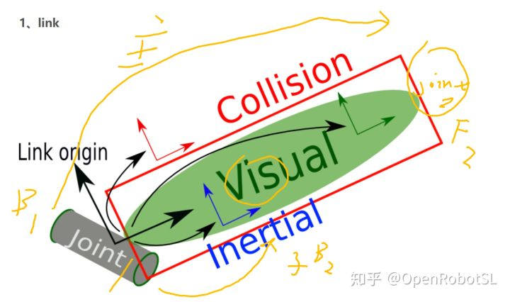

Home
本文转载自： https://zhuanlan.zhihu.com/p/264930343
Simscape建模笔记
urdf开始讲起吧

urdf建模过程其实与dh建模本质一样，DH建模是连杆坐标系，建立的是关节与关节之间的变换关系，也就是上图中==黄色主线==所指示的，从joint1(B1)到joint2(F2)之间的变换关系，而这就需要知道base的坐标、关节1的坐标一直到关节n的坐标位置，以此才能逐渐建立关节之间的数学关系T01、T12、……、Tnn+1，最终可以得到末端相对于前面任意关节的齐次变换关系。
而urdf呢，多加了visual、inertial等标签，先简单以下图为例，link1建立在关节0上，也就是base，link2建立在joint1上，那么link1的坐标系是基于关节0的，link2的坐标系是基于joint1的，而joint1是基于base（也就是关节0）。加上inertial以及visual标签后，这两个标签的坐标也是基于该连杆前一个joint的，比如上图中的连杆各个标签就是基于前一个joint1的，也就是上图中的==黄色子线==。
开始讲urdf转simscape
以smimport(robot2.urdf)为例，下图为base_link模块点开后，ReferenceFrame是参考坐标系，目前不知道这个坐标系是如何建立的，没有数据，因为我urdf文件是sw模型直接导的，~~猜测是建模时起始参考面的中心点上坐标系。~~直接看matlab官方介绍，如下，反正经验证这RF虽然不影响建模，但是能直接标定谁是参考，RF不影响整套模型，但是对于坐标系标注还是有影响得，所以保险起见建模时就加上。
定义一个框架，网络中的其他框架可以引用到该框架，或者可以附加到这些框架。 参照系不是必需的，但可以为建模和设计提供方便。
端口R是用参考框架标识的框架端口。 直接连接到R的任何框架端口也用参考框架标识。

线路1、线路2和线路3分别代表的是从ReferenceFrame出发(也就是基于ReferenceFrame坐标系)，分别经过变换1、2、3-1以及3-2后得到inertial、visual以及输出的F1坐标系（F1坐标系就是base_link连接的joint2的输入B）。
经过变换1得到Inertial标签的R坐标，也就是第二幅图中椭圆圈圈中的偏移数据，对应的是urdf中的这段语句，可以看到中的标签的xyz和rpy对应上面第二幅图中Rotation和Translation相关数据。
<link
name="base_link">
<inertial>
<origin
xyz="0.022007 0 0.019645"
rpy="0 0 0" />
<mass
value="0.75904" />
<inertia
ixx="0.0010231"
ixy="1.2626E-19"
ixz="0.00026134"
iyy="0.0029377"
iyz="-1.3324E-20"
izz="0.003596" />
</inertial>上面这个图呢，就是从referenceFrame出来的第二条变换线路，通过变换2得到visual标签下的R坐标系，方框中数据对应urdf文件中的这段语句，现在只看标签下的标签，即xyz和rpy，另外标签中的属性数据可以通过双击框图中的visual模块进行修改。
<visual>
<origin
xyz="0 0 0"
rpy="0 0 0" />
<geometry>
<mesh
filename="package://myrobot_description_ultimate/meshes/base_link.STL" />
</geometry>
<material
name="">
<color
rgba="1 1 1 1" />
</material>
</visual>上面两幅图呢，就是从referenceFrame出发的第三条变换线路，通过坐标变换3-1和变换3-2可以得到该子框图(base_link)的输出F1，也就是该link所连接的joint1的输入B。可以理解为$T_{ref}T_{3-1}T_{3-2}=F1$，对应于urdf中的joint1的语句，此时只看标签中的xyz和rpy语句，joint1中另外的标签属性呢可以通过双击大框图中对应的joint1模块进行查看和修改。
<joint
name="joint1"
type="revolute">
<origin
xyz="0 0 0.05"
rpy="0 0 0" />
<parent
link="base_link" />
<child
link="link1" />
<axis
xyz="0 0 1" />
<limit
lower="-2.36"
upper="2.36"
effort="30"
velocity="1" />
</joint>上面讲的所有都是base_link子框图中的东西，其他的linkn与之类似，我就不多说了。不过还需要注意下面几幅图，按框图的数据流进行分析，就可以看出base_link框图输出的坐标系F1是joint1输入坐标系B，joint1输出坐标系F是link1输入坐标系F，也就是base_link基于ReferenceFrame，可以将这个ReferenceFrame理解为joint0，joint1的变换涵盖在base_link中，基于ReferenceFrame，link1就是基于joint1的，至于link1子框图中的ReferenceFrame，从下图中可以看出，就是joint1的输出，也就是说能够理解为link1是基于joint1的，一个模块串联一个模块，最终就构成了urdf模型树。
就是这么个顺序建模，完事儿撒花??ヽ(°▽°)ノ?
下面是link2子框图中的内容，看起来特别清晰，同样也是三条变换线路。。。
至于MBD给的UR臂xml文件呢
这个总的来说，是一个很有意思的建模方式，不同于之前的DH建模顺序流。DH建模顺序流实际上就是数学建模，首先得知道各个连杆关节相对于基坐标系或者前一个关节的坐标位置，然后通过变换矩阵连续相乘得到末端或者某个关节相对于基系或者其他关节的齐次变换。urdf呢，建模顺序可以从上面simscape框图可以看出，与DH建模顺序类似，可在其中加上inertial、visual、collision等标签。
MBD课程给的这个xml文件呢，是通过sw中的simscape插件导出来的，通过这种方式建模实际上是一种物理建模，运行UR臂的xml文件后，可以看到，每个连杆link的子框图都是一样的，如下图，数据流是通过如下两个箭头方向进行的。urdf中的inertial、visual等标签都在R(solid)中，双击即可修改，所以说simscape直接导的模型更模块化一些。。。
下面这个图呢，最上面一层红色的单向长剪头是整个模型树的流向，中间绿色的箭头是urdf的建模顺序，最下面的红色箭头是DH的建模顺序，中间的红色短箭头是simscape建模的思路。。。
从simulink模型上来说，urdf的建模思路更为直观，直接通过搭积木的方式将最终的模型树建好，而simscape更具模块化的思想，直接通过拼图的方式将模型一块一块拼好。
补充一下ReferenceFrame
点开urdf导出的simulink中link1模块，进行如下修改，运行后可以发现
由上面可以看出，ReferenceFrame是由输入F逆乘joint1_AxisinvTranseform旋转矩阵得到，旋转矩阵是单位阵，所以是沿着F坐标系的x反方向移动了0.1。。。总之这个RF用处很迷，建模时只要joint1_AxisinvTranseform是单位旋转阵+零平移，则RF就是输入F坐标系= =。所以我上面画的变换路线图均是从RF出发的。
个人还是觉得，用urdf先建模然后再转simscape更容易理解一下。
======================================================================
我的测试结果及程序
下面是我测试的代码：